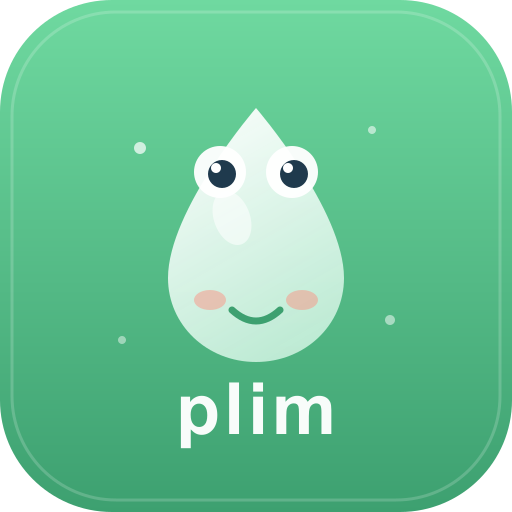

Desenvolvedor: Linyker Mendes Coelho
Revisão clínica: _______________________________ (enfermeira especialista)
Ferramenta de apoio à uroterapia padrão (urotherapy) para crianças de 4 a 10 anos em tratamento de enurese, bexiga hiperativa, constipação e incontinência. O aplicativo não diagnostica, não trata sozinho e não substitui o acompanhamento profissional: ele transforma as tarefas que o tratamento já pede (diário, hidratação, rotina de banheiro, exercícios) em algo que a criança quer fazer.
O app funciona 100% no aparelho da família, sem servidor, sem conta e sem coleta de dados, o que simplifica as questões de privacidade envolvidas em dados de saúde de menores (LGPD, art. 11 e art. 14).
| Recurso do app | Conceito clínico | Referência de partida |
|---|---|---|
| Diário de micção (horário, volume estimado em copos, cor da urina, gatilhos) | O diário miccional é a base da avaliação e do acompanhamento na uroterapia padrão recomendada pela ICCS | Nieuwhof-Leppink et al., ICCS, J Pediatr Urol, 2021 |
| Diário de evacuação com escala de Bristol ilustrada | Classificação da consistência fecal; constipação funcional frequentemente coexiste com sintomas urinários (disfunção vesico-intestinal) | Lewis & Heaton (1997); Roma IV (Hyams et al., 2016) |
| Registro de escape com acolhimento (sem punição, mesma recompensa) | A uroterapia comportamental orienta nunca punir acidentes; culpa e vergonha pioram a adesão, e o dado honesto vale mais que o dado bonito | ICCS enurese (Nevéus et al., 2020) |
| Lembretes programados de banheiro (7 horários padrão) | Micção programada (timed voiding), componente da uroterapia padrão | ICCS uroterapia (2021) |
| Missão diária de água com histórico de copos | Ingestão hídrica adequada e distribuída ao longo do dia, evitando concentração à noite | A confirmar (valores no app: 6 a 8 copos, 1,2 a 1,5 L/dia) |
| Jogo Foguete (segurar = contrair, soltar = relaxar, descanso obrigatório, séries por idade) | Treino da musculatura do assoalho pélvico com proporção contração/descanso; o app funciona como metrônomo lúdico, não como biofeedback | A validar (protocolos: 3s/6s ×5 até 5 anos; 5s/10s ×6 de 6 a 7; 8s/10s ×8 de 8+) |
| Jogo Balão (inspirar 4s, segurar 2s, expirar 6s) | Respiração diafragmática para relaxamento do assoalho pélvico, útil na evacuação e na micção disfuncional | A validar |
| Jogo Pulo do Sapo (toques rápidos em ritmo) | Coordenação e contrações rápidas (fibras de contração rápida) | A validar |
| Conteúdo educativo (postura no vaso, pés apoiados, sem pressa, relaxar a barriga) | Educação e desmistificação, primeiro pilar da uroterapia; postura de evacuação com apoio dos pés | ICCS uroterapia (2021) |
| Relatório PDF para o profissional | O diário só tem valor clínico se chega a quem prescreve; a exportação resume eventos, tendência de escapes e hidratação |
Estas regras estão implementadas no código e qualquer recurso novo deve respeitá-las: